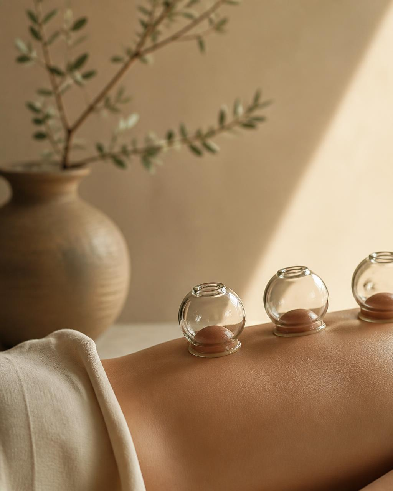

Drainage Lymphatique
Stimule l'élimination des toxines et réduit l'inflammation pour une sensation de légèreté immédiate.
L'art thérapeutique des ventouses pour restaurer la circulation, soulager les douleurs chroniques et libérer l'énergie stagnante.

Stimule l'élimination des toxines et réduit l'inflammation pour une sensation de légèreté immédiate.
Décompresse les tissus myofasciaux pour accélérer la réparation musculaire après l'effort.
Une approche douce pour calmer le système nerveux et réduire le stress émotionnel ancré.
Chaque séance débute par un échange personnalisé pour comprendre votre corps, vos tensions et vos objectifs. Les ventouses sont alors posées avec précision sur les zones concernées.
La sensation est celle d'une aspiration ferme et chaleureuse. Laissez-vous porter pendant 30 à 60 minutes dans un environnement calme, parfumé et pensé pour la détente profonde.
On fait le point sur vos besoins et vos zones de tension.
Pose des ventouses adaptées à votre corps et à votre ressenti.
Recommandations personnalisées pour prolonger les bienfaits.
Non, la sensation est celle d'une pression inverse ferme mais confortable. Nous ajustons l'intensité à votre ressenti.
Les décolorations circulaires disparaissent généralement entre 3 et 7 jours selon votre circulation.
Elle convient aux personnes souffrant de tensions musculaires, de stress, de fatigue ou de douleurs chroniques légères.
Comptez entre 45 et 75 minutes selon le soin choisi, dont un temps d'échange initial.
Réservez votre première séance de ventouses à Paris et ressentez la différence dès le premier soin.
Réserver par emailOu écrivez-nous via le chat en bas à droite.